Главная → Блог → Токсичные отношения
Токсичные отношения: 12 признаков и как из них выйти
Обновлено: 31.07.2026 · 20 минут чтения
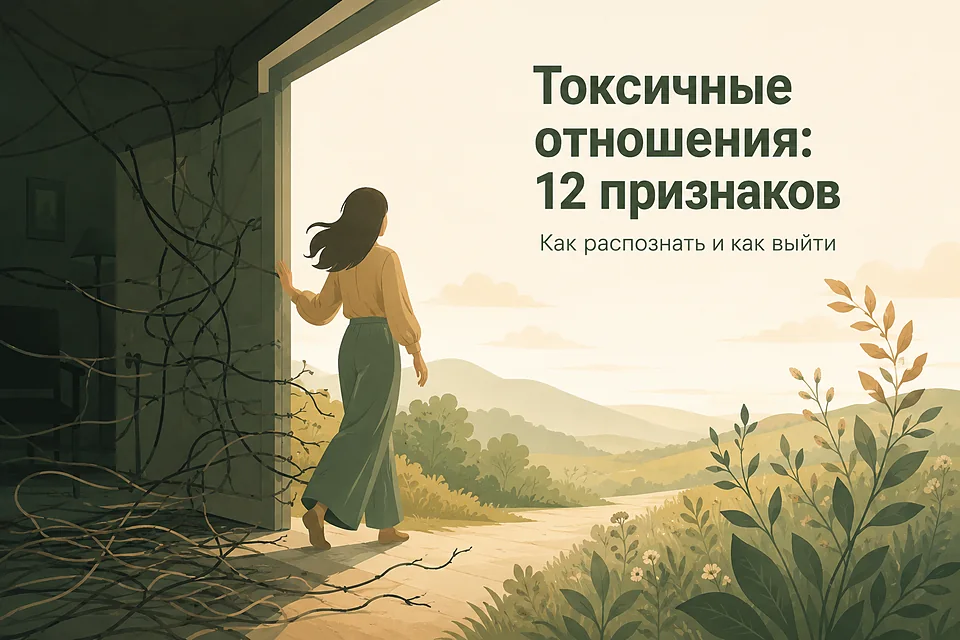
Токсичные отношения — это отношения, в которых повторяющееся поведение партнёра систематически ухудшает ваше состояние: рядом с этим человеком вы боитесь сказать лишнее, постоянно оправдываетесь и всё меньше похожи на себя. Речь не про одну плохую ссору и не про трудный период, а про устойчивый узор. Главное — не искать виноватого, а честно посмотреть на повторяющийся сценарий и решить, можно ли его изменить. Ниже — 12 признаков токсичных отношений, чем они отличаются от абьюзивных, какие красные флаги видно в самом начале, почему из таких отношений так трудно уйти и что делать, если вы узнали в описании свою историю.
- Что такое токсичные отношения
- 12 признаков токсичных отношений
- Красные флаги: что заметно в самом начале
- Формы токсичности: газлайтинг, контроль, качели
- Цикл: почему то невыносимо, то прекрасно
- Не только партнёр: родители, друзья, работа
- Почему так трудно уйти
- Экспресс-проверка: 10 вопросов
- Что делать: 8 шагов
- Что говорить: готовые фразы
- Можно ли изменить токсичного человека
- Как выйти из токсичных отношений безопасно
- Что будет после и сколько длится восстановление
- Мифы о токсичных отношениях
- Что не помогает
- Когда нужна помощь — и когда срочно
- Частые вопросы
Что такое токсичные отношения
Токсичные отношения — это отношения, в которых повторяющееся поведение одного или обоих партнёров систематически ухудшает состояние другого: подрывает самооценку, изматывает и лишает опоры. Слово «токсичный» не медицинский диагноз, а описание узора. И узнают его не по громкости ссор, а по следу, который отношения оставляют в человеке.
Здоровые отношения — не те, где нет конфликтов. Конфликты есть везде, где два разных человека живут общей жизнью. Разница в том, чем конфликт заканчивается. В здоровой паре после трудного разговора становится яснее и спокойнее. В токсичной — тяжелее, и вы уносите с собой ощущение, что снова оказались виноваты.
| Признак | Трудный период | Токсичные отношения | Абьюз |
|---|---|---|---|
| Что происходит | Кризис из-за внешних обстоятельств или усталости | Повторяющийся разрушительный стиль общения | Систематическая власть и контроль над другим |
| После разговора | Становится легче, есть договорённости | Становится тяжелее, вы снова виноваты | Страшно; договорённости не работают |
| Ваше «нет» | Слышат, даже если спорят | Наказывают обидой, молчанием, скандалом | Не признаётся в принципе |
| Ваш круг общения | Сохраняется | Сужается: с друзьями «сложно» | Целенаправленно перекрывается |
| Что нужно делать | Разговаривать и восстанавливаться | Ставить границы и смотреть на реакцию | Обеспечивать безопасность и выходить |
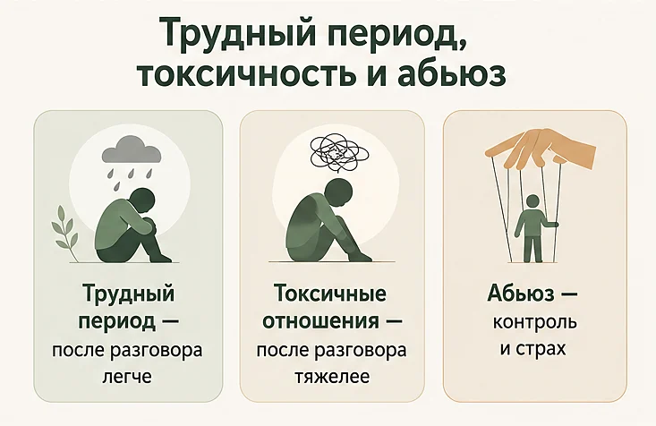
Различать эти три колонки важно практически. Трудный период лечится разговором и временем. Токсичные отношения иногда удаётся изменить, если оба видят проблему. А там, где есть угрозы, контроль и насилие, советы вроде «объясните партнёру свои чувства» не только не работают, но и опасны — там первоочередная задача другая.
Масштаб проблемы больше, чем кажется. По данным Всемирной организации здравоохранения, примерно каждая третья женщина в мире (около 31,6%, или 840 миллионов) хотя бы раз в жизни сталкивалась с насилием со стороны партнёра или сексуальным насилием. Среди женщин 15–49 лет, состоявших в отношениях, физическое или сексуальное насилие от партнёра переживали 25,8%. Мужчины тоже оказываются в токсичных и абьюзивных отношениях — просто об этом реже говорят вслух, и им ещё труднее просить о помощи.
12 признаков токсичных отношений
Один пункт из списка — это ещё не приговор отношениям: у всех бывают плохие недели. Тревожно, когда признаки складываются в устойчивый набор и держатся месяцами.
- После общения вам стабильно хуже. Не после конкретной ссоры, а вообще: вы выходите из разговоров опустошённым, а перед встречей ловите себя на тяжести в груди.
- Вы ходите по минному полю. Заранее подбираете слова, продумываете, в каком настроении подойти, и предугадываете реакцию — потому что взорваться может от чего угодно.
- Постоянная критика и обесценивание. Ваши успехи «не считаются», внешность и вкусы становятся поводом для уколов, а любые чувства объявляются преувеличением.
- Вы сомневаетесь в собственной памяти. «Такого не было», «ты всё выдумала», «я этого не говорил» — и вы правда перестаёте понимать, где правда. Это газлайтинг.
- Контроль. Проверка телефона и переписок, вопросы «где ты и с кем», требования отчитываться о деньгах или согласовывать одежду и планы — под соусом заботы.
- Изоляция от близких. Ваши друзья и родные оказываются «плохими», встречи с ними каждый раз выходят боком, и постепенно вы перестаёте их звать.
- Молчаливое наказание. После любого несогласия — день или неделя игнора, пока вы не извинитесь; молчание используется не для паузы, а как инструмент.
- Вина как валюта. «Ты меня довела», «это из-за тебя я сорвался», «после всего, что я для тебя сделал» — ответственность за поведение всегда оказывается на вас.
- Качели. Резкие переходы от нежности и обещаний к холоду и обвинениям без понятной причины; вы живёте от одного хорошего периода до другого.
- Ревность подаётся как любовь. Слежка, требования отчёта и запреты объясняются словами «просто я тебя очень люблю», а ваша реакция — «значит, тебе есть что скрывать».
- Ваши границы не выдерживают. Любое «нет», «мне это неприятно», «я так не хочу» становится началом конфликта, и проще уступить, чем отстоять.
- Вы перестали быть собой. Бросили увлечения, стали тише, извиняетесь по десять раз в день и с трудом вспоминаете, чего хотите вы сами.
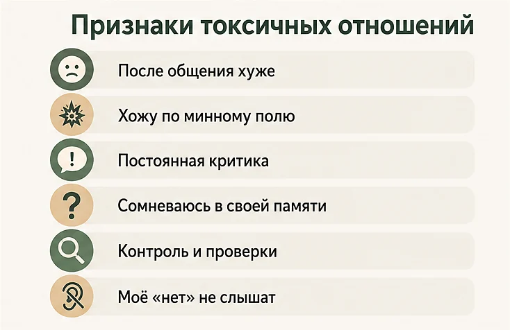
Как это выглядит. Марина три года объясняет подругам, что «просто у него сложный характер». Она перестала ходить на встречи выпускников — каждый раз это заканчивалось трёхдневным молчанием дома. Свою прибавку к зарплате она не отпраздновала: услышала «ну наконец-то, хоть какая-то польза». Когда она пытается вспомнить, что ей нравилось раньше, в голове пусто. Ни одного скандала с криками за эти годы не было.
Красные флаги в отношениях: что заметно в самом начале
Красные флаги — это ранние сигналы, которые видно ещё до того, как отношения стали близкими и запутанными. В отличие от признаков выше, они появляются в первые недели и месяцы, когда уйти намного проще. Проблема в том, что на старте их легко списать на страсть, характер или «просто он очень эмоциональный».
- Слишком быстрый темп. Признания, планы съехаться и разговоры про «мы созданы друг для друга» в первые недели. Быстрое сближение не оставляет времени узнать человека — и создаёт ощущение долга.
- Все бывшие оказались «сумасшедшими». Если в каждой прошлой истории виноват кто угодно, кроме него, то ваша история просто ещё не написана.
- Мелкое «нет» вызывает обиду. Отказ поехать куда-то, задержаться, ответить сразу — и вы уже оправдываетесь. Границы проверяют по мелочам, и именно на мелочах видна реакция.
- Ревность в первые недели. Вопросы «с кем ты был», просьбы показать переписку и «мне спокойнее, когда я знаю всё» — на старте это подаётся как сила чувств.
- Уколы под видом шуток. Особенно при других людях, с обязательным «ты что, шуток не понимаешь» в ответ на вашу реакцию.
- Резкость с посторонними. Как человек разговаривает с официантом, курьером, оператором поддержки — хороший прогноз того, как он будет разговаривать с вами, когда пройдёт влюблённость.
- Ни разу не признал свою часть. В любом конфликте виноваты обстоятельства, начальник, погода или вы.
- Быстрое сплетение быта и денег. Общий счёт, переезд, кредит или ребёнок «поскорее» — всё, что делает выход дороже, до того как вы успели узнать человека.
- Ваши близкие насторожились. Со стороны узор виден раньше: если сразу несколько человек, которым вы доверяете, говорят одно и то же — это данные, а не ревность.
Один красный флаг — не приговор: люди бывают тревожными, неловкими или уставшими. Тревожно, когда их несколько, когда они появляются очень рано и когда после вашего спокойного «мне это неприятно» ничего не меняется.
Формы токсичности: газлайтинг, контроль, качели
Токсичное поведение редко выглядит как злодейство из фильма. Обычно это набор приёмов, каждый из которых по отдельности можно объяснить и оправдать.
Газлайтинг
Систематическое переписывание реальности: отрицание фактов, слов и договорённостей. Опасность газлайтинга в том, что он бьёт по самой способности опираться на себя — человек перестаёт доверять своей памяти и начинает спрашивать у партнёра, что на самом деле произошло. Противоядие простое и скучное: письменные заметки сразу после важных разговоров.
Обесценивание и «шутки»
Уколы под видом юмора, особенно при других людях, а на вашу реакцию — «ты что, шуток не понимаешь». Отдельная разновидность — обесценивание чувств: «ты всё преувеличиваешь», «ты слишком чувствительная». Через полгода такого вы уже сами начинаете предварять свои слова фразой «может, я и правда преувеличиваю».
Любовная бомбардировка
Ошеломляющее начало: шквал внимания, подарков, планов на общее будущее буквально с первых недель. Само по себе бурное начало — не диагноз, но если за ним следуют быстрое требование эксклюзивности, ревность и обиды на любую дистанцию, это часто первая фаза качелей. Именно с этим ярким периодом человек потом годами сравнивает происходящее и надеется его вернуть.
Контроль и изоляция
Контроль редко начинается с запретов. Сначала — «мне спокойнее, когда ты пишешь, что доехала», потом — «зачем тебе эти подруги», затем общий счёт, на котором ваши траты обсуждаются, а его нет. NHS прямо относит к эмоциональному насилию контроль над деньгами, перепиской и кругом общения — даже если ни разу не поднималась рука.
Молчаливое наказание
Демонстративный уход из контакта: не отвечает, не смотрит, живёт рядом как будто вас нет — до тех пор, пока вы не извинитесь, часто непонятно за что. Это не «человеку нужно остыть»: пауза в конфликте выглядит иначе — о ней договариваются и называют срок.
Перекладывание ролей
Вы приходите с претензией — и через пять минут утешаете партнёра и извиняетесь. Схема устойчивая: сначала отрицание («ничего такого не было»), потом атака («а ты сама-то?»), в финале — смена ролей, где пострадавшим оказывается он. После нескольких таких разговоров пропадает сама привычка о чём-то говорить.
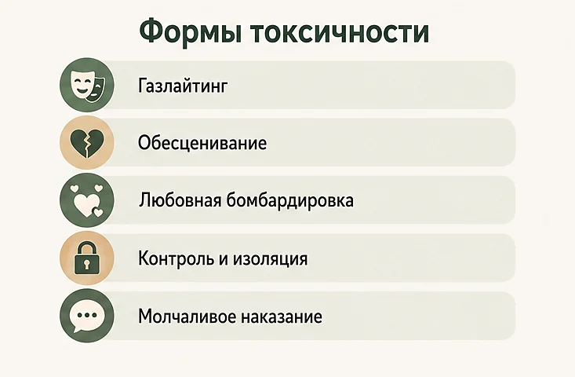
Цикл: почему то невыносимо, то прекрасно
Токсичные отношения почти никогда не бывают плохими постоянно — и именно поэтому в них остаются. Чаще всего они движутся по кругу, который в 1979 году описала психолог Ленор Уокер, изучавшая переживших домашнее насилие.
- Нарастание напряжения. Придирки, недовольство, мрачное молчание. Вы стараетесь всё сделать идеально, чтобы не спровоцировать.
- Взрыв. Скандал, обвинения, иногда угрозы или сила. Короткая фаза, но именно она задаёт страх на все остальные.
- Примирение. Раскаяние, слёзы, подарки, обещания измениться, объяснения вроде «я был не в себе, ты же знаешь, как я тебя люблю».
- Затишье, «медовый месяц». Отношения снова кажутся тёплыми и настоящими — и в этот момент кажется, что вот он, настоящий человек, а всё плохое было случайностью.
Потом круг повторяется, и обычно с ускорением: фазы затишья становятся короче, а взрывы — чаще. Но психика запоминает не статистику, а самый яркий эпизод — примирение.
Работает это как игровой автомат. Когда хорошее выдаётся непредсказуемо, привязанность становится сильнее, чем при ровном и предсказуемом отношении: мозг цепляется за возможность выигрыша. Отсюда фразы, которые окружающие не понимают: «зато когда всё хорошо — как ни с кем». Именно поэтому «просто уйди, раз плохо» — бесполезный совет.
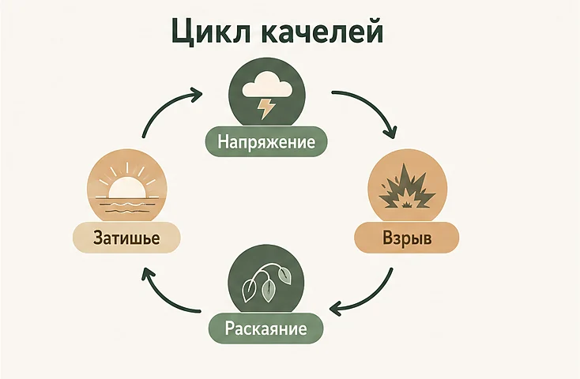
Не только партнёр: родители, друзья, работа
Токсичным может быть любой близкий контакт, где есть привязанность и зависимость.
Родители и родственники
Здесь узор распознаётся хуже всего: то, что человек видел с детства, кажется нормой. Постоянная критика «из любви», сравнение с чужими детьми, чувство вины как рычаг («я всю жизнь на тебя положила»), вторжение в решения взрослого человека. Спорить о прошлом почти бесполезно — работают границы: сколько времени вы общаетесь, какие темы не обсуждаются, что вы не обязаны объяснять.
Друзья
Дружба тоже бывает односторонней: вы всегда слушаете, вас зовут только в трудные времена, ваши успехи вызывают холодок, а отказ — обиду на неделю. Хороший вопрос для проверки: после встречи с этим человеком вам обычно теплее или тяжелее?
Работа
Руководитель, который унижает при коллегах, меняет правила задним числом и держит команду в напряжении, создаёт ровно тот же эффект: тревога, вина, падение самооценки. Подробнее — в статье про стресс на работе; если сил уже не осталось, посмотрите материал про эмоциональное выгорание.
Почему так трудно уйти
«Почему она не уходит?» — самый частый и самый бесполезный вопрос. Причин обычно несколько сразу, и все они реальные.
- Качели привязывают. Непредсказуемое чередование тепла и холода формирует сильную связь — человек держится за хорошие периоды, а не за реальное положение дел.
- Надежда на «настоящего» человека. В памяти живёт тот, кто был в начале, и кажется, что настоящий он — именно тот, а всё остальное — временное.
- Упавшая самооценка. После месяцев критики появляется убеждение «кому я такая нужна» — и оно удерживает надёжнее любых запретов. Об этом — материал про самооценку.
- Изоляция. Если круг общения сузился до одного человека, уход означает остаться совсем одному — а это отдельный тяжёлый страх.
- Вложенные годы. «Я потратила на это пять лет» — и уйти ощущается как признать их напрасными, хотя логика ровно обратная.
- Практика: деньги, жильё, дети, документы. Часто это не отговорки, а реальные препятствия, которые нужно решать по пунктам.
- Страх. Угрозы «найду», «заберу детей», «сделаю с собой что-нибудь» — распространённый способ удержать, и относиться к нему нужно серьёзно.
- Стыд. Признать, что происходило, — значит рассказать об этом другим, и многим это тяжелее, чем терпеть дальше.
Если вы узнаёте себя в этом списке — вы не слабый и не «сами виноваты». Вы находитесь в ситуации, которая устроена так, чтобы из неё было трудно выйти.
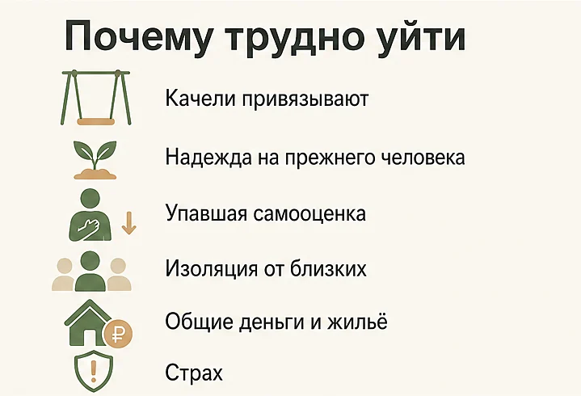
Экспресс-проверка: 10 вопросов
Это не диагностика, а способ увидеть картину целиком. Отвечайте про последние несколько месяцев.
- Перед встречей или разговором вы чаще чувствуете напряжение, чем радость?
- Вы заранее продумываете формулировки, чтобы не спровоцировать реакцию?
- Вы регулярно извиняетесь за то, в чём не уверены, что виноваты?
- Вам говорили, что события были не так, как вы помните, и вы начинали сомневаться?
- Ваше «нет» приводит к обиде, молчанию или скандалу чаще, чем к разговору?
- Вы стали реже видеться с друзьями и родными из-за этих отношений?
- Вы скрываете от близких, что происходит между вами?
- Вас проверяют: телефон, переписка, траты, местоположение?
- Вы бросили занятия и интересы, которые раньше были важны?
- Вы ловите себя на мысли «я, кажется, схожу с ума» рядом с этим человеком?
Три-четыре «да» — повод честно поговорить и посмотреть на реакцию. Пять и больше — сигнал, что дело не в вашей чувствительности и что пора подключить помощь со стороны. Особенно если среди ответов есть контроль, изоляция и сомнения в собственной адекватности.
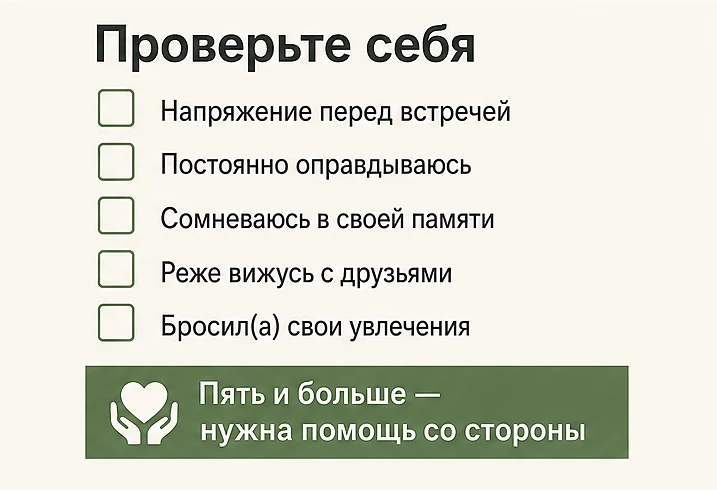
Что делать: 8 шагов
Первый шаг — не «уходить или остаться». Сначала нужно вернуть себе ясность: в тумане невозможно принять ни одно решение.
- Начните записывать факты. Короткий дневник: дата, что произошло, что было сказано, как вы себя чувствовали. Две-три недели таких записей делают то, чего не даёт память: показывают узор и защищают от газлайтинга.
- Верните взгляд со стороны. Расскажите двум-трём людям, которым доверяете, без смягчений. Изоляция — главный союзник токсичных отношений, и первое, что стоит сделать, — перестать быть с этим наедине.
- Отделите поведение от объяснений. Оценивайте не слова «я изменюсь», а действия за последний месяц. Полезная формула: «что конкретно он сделал по-другому после нашего разговора?»
- Поставьте одну конкретную границу. Не список претензий, а одно ясное правило: «я не продолжаю разговор, когда на меня кричат — я выхожу из комнаты и вернусь через час». Границы проверяют не словами, а реакцией на них.
- Перестаньте спорить о реальности. Доказывать «это было, я помню» бессмысленно — это бесконечный спор, в котором вы всегда проигрываете. Опирайтесь на свои записи и на короткие ответы: «я вижу это иначе», «давай не будем это обсуждать».
- Верните свою территорию. По одному пункту: встреча с подругой, старое увлечение, свой счёт, свои пароли, врач, о котором вы не отчитываетесь. Каждый такой шаг возвращает опору, даже если решение ещё не принято.
- Назначьте себе срок и критерий. «Я даю нам три месяца, и критерий — прекратились ли оскорбления и проверки телефона». Срок и критерий вытаскивают из бесконечного «может, ещё чуть-чуть подожду».
- Подключите поддержку. Психолог, кризисная линия, группа поддержки, близкий человек. Особенно важно, если вы уже поняли, что хотите уйти, но не получается: это самая частая точка, где нужна помощь.
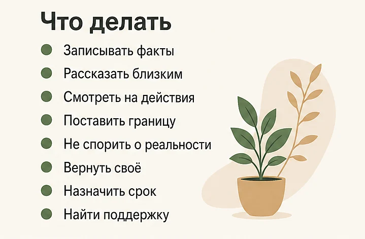
Что говорить: готовые фразы
В токсичном разговоре легко потерять почву: вас втягивают в спор о фактах, в оправдания или в обсуждение вашего характера. Помогают короткие, спокойные, повторяемые формулировки — их стоит заготовить заранее.
| Ситуация | Что не работает | Что сказать |
|---|---|---|
| «Такого не было, ты выдумала» | Доказывать, вспоминать детали, искать подтверждения | «Я помню это иначе. Давай вернёмся к тому, что делать дальше» |
| Крик и оскорбления | Кричать в ответ или замолкать и терпеть | «Я не продолжаю разговор в таком тоне. Вернусь через час» |
| «Ты меня довела» | Оправдываться и извиняться | «За свои слова отвечает тот, кто их говорит» |
| Обесценивание под видом шутки | Смеяться вместе со всеми | «Мне это неприятно. Не шути так про меня» |
| Проверка телефона | Отдавать телефон, чтобы «не было повода» | «Я не отчитываюсь за переписку. Если нет доверия, это стоит обсуждать» |
| Молчаливое наказание | Ходить следом и вымаливать разговор | «Я готов(а) поговорить, когда ты будешь готов(а). Я не буду угадывать, за что» |
| Давление «выбирай: я или подруги» | Спорить и оправдывать друзей | «Я не буду выбирать. Общение с близкими остаётся» |
Главное в этих фразах — не остроумие, а повторяемость и спокойный тон. Вы не выигрываете спор, вы обозначаете, что можно, а что нет. И смотрите на то, что происходит после: реакция на границу — самая честная информация об отношениях.
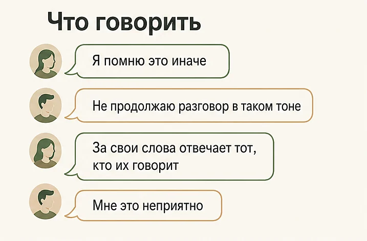
Можно ли изменить токсичного человека
Изменить другого человека нельзя — он меняется только сам и обычно только тогда, когда сталкивается с последствиями своего поведения. Люди действительно меняются, но это их работа, а не ваша: ни идеальное поведение, ни терпение, ни объяснения не запускают этот процесс за них.
Отличить настоящие изменения от их имитации помогает не сила слов, а несколько конкретных признаков.
| Похоже на настоящие изменения | Похоже на имитацию |
|---|---|
| Называет конкретные поступки без «но»: «я кричал и обесценивал тебя» | Общее «прости, я был не в себе» и «давай забудем» |
| Не требует немедленного прощения и даёт вам время | Обижается, что вы «до сих пор не отошли» |
| Идёт к специалисту сам и продолжает ходить | Записывается «ради тебя» и бросает через две встречи |
| Меняется в мелочах и в спокойные дни | Становится хорошим только после кризиса или на публике |
| Выдерживает ваше «нет» без наказания молчанием | Любая граница снова оборачивается виной или скандалом |
Проверять это стоит не неделями, а месяцами: раскаяние после ссоры — часть цикла, а не результат. Разумный ориентир — два-три месяца, в течение которых вы смотрите на поведение в обычные дни, а не на обещания в тяжёлые.
И отдельно о ситуации, где ждать опасно. Если есть угрозы, физическая сила или контроль, надежда «он изменится» обходится слишком дорого: цикл обычно ускоряется, а не затухает. Здесь работает не ожидание, а безопасность и помощь со стороны.
Как выйти из токсичных отношений безопасно
Если вы решили уходить, самая частая ошибка — сделать это спонтанно, на пике ссоры, без подготовки. Спокойный уход почти всегда требует нескольких дней подготовки.
- Документы: паспорт, СНИЛС, полис, свидетельства о рождении детей, диплом — в одном месте или в копиях у надёжного человека.
- Деньги: свой счёт, часть наличных, доступ к своей карте без общих устройств.
- Жильё: договорённость, где вы будете жить хотя бы первые дни.
- Люди: минимум один человек знает, что вы уходите и когда.
- Цифровая безопасность: смена паролей, отключение общего доступа к геолокации и семейным аккаунтам.
- Вещи: заранее собранная сумка с самым необходимым, если есть риск, что уходить придётся быстро.
- Дети и животные: с кем они и как вы их забираете.
- Связь: заранее решите, будете ли общаться после ухода и по каким каналам.
Если вы опасаетесь агрессии, не объявляйте о разрыве наедине и не делайте этого в закрытом пространстве. Разговор можно перенести в общественное место, провести по телефону или в присутствии другого человека — это не трусость, а разумная предосторожность. При угрозах звоните 112; по телефону 8-800-7000-600 круглосуточно и бесплатно консультируют психологи и юристы.
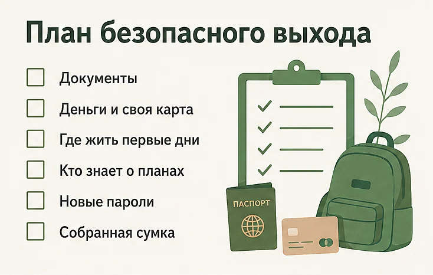
Будьте готовы, что сразу после ухода начнётся самая убедительная фаза: раскаяние, признания, обещания, цветы, «я записался к психологу». Это не обязательно ложь — но это часть цикла, а не доказательство перемен. Единственная надёжная проверка — время и поступки, а не сила эмоций в первую неделю.
Что будет после и сколько длится восстановление
После выхода из токсичных отношений сначала обычно становится не легче, а страннее. Исчезает постоянное напряжение — и вместе с ним пропадает то, вокруг чего строилась вся жизнь. Появляются пустота, сомнения «может, я всё преувеличил», тяга написать первым.
Типичный сценарий выглядит так. Первые дни — облегчение вперемешку с тревогой. Вторая-третья неделя — самая сильная тяга вернуться, особенно если приходят сообщения. Первые месяцы — постепенно возвращаются сон, аппетит и интерес к жизни. Дальше медленно восстанавливается уверенность в себе. Откаты после звонков и случайных встреч нормальны и не отменяют прогресса.
Что помогает: контакт с людьми вместо изоляции, режим сна и движения, возвращение дел, которые были до этих отношений, и работа с самооценкой — именно она обычно страдает сильнее всего. Подробные шаги — в статьях про то, как пережить расставание и как справиться с одиночеством, если тишина после ухода оказалась тяжелее, чем вы ожидали.
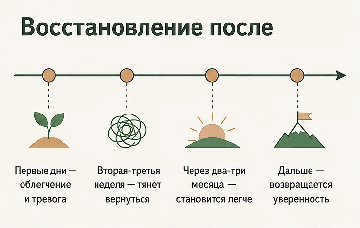
Если через несколько месяцев не уходят тревога, кошмары, вздрагивание от звука сообщений или ощущение оцепенения — обратитесь к специалисту. Такие следы после длительного напряжения не «проходят сами по себе», с ними работают.
Не с кем обсудить то, что происходит дома? В AI Therapist можно разложить ситуацию по полочкам в любое время — без осуждения и без страха, что это дойдёт до кого-то из близких. Это не замена психологу и не помощь при угрозе безопасности, но хорошая точка, чтобы начать говорить.
Мифы о токсичных отношениях
- «Если бы он меня любил, он бы изменился». Любовь и способность менять поведение — разные вещи. Меняются не от силы чувств, а от собственного решения и обычно с чьей-то помощью.
- «Виноваты всегда оба, поровну». В обычном конфликте — часто да. Но там, где есть контроль, унижение и насилие, ответственность несёт тот, кто это делает, а не тот, кто «спровоцировал».
- «Он же не бьёт — значит, это не насилие». Эмоциональное насилие, контроль денег, изоляция и угрозы — это тоже насилие, и его последствия для психики бывают тяжелее синяков.
- «Ради детей нужно терпеть». Дети считывают напряжение, даже когда при них не ссорятся, и растут с моделью отношений, которую видят каждый день. Терпение «ради детей» часто оказывается терпением вместо детей.
- «Токсичные — это какие-то особенные люди». Чаще это обычный человек, с которым в других отношениях всё складывается иначе. Проблема не в ярлыке, а в устойчивом узоре, который возникает именно здесь.
- «Надо просто больше любви и терпения». Терпение без изменения поведения продлевает цикл. Меняет ситуацию граница, а не выносливость.
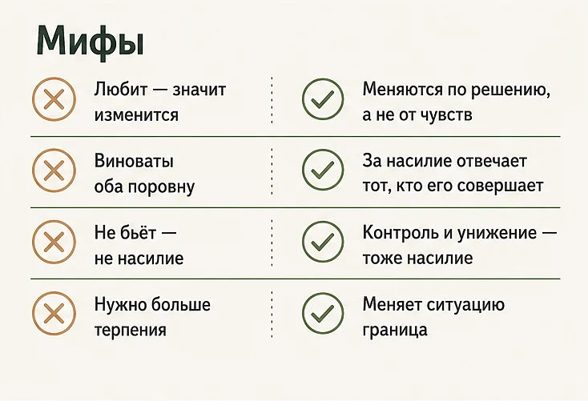
Что не помогает
- Пытаться переделать человека. Идеальное поведение с вашей стороны не останавливает цикл: причина не в том, насколько хорошо вы стараетесь.
- Ультиматумы, которые вы не выполняете. Каждый невыполненный «в последний раз» показывает, что границы можно не воспринимать всерьёз.
- Отвечать тем же. Зеркалить обесценивание и молчание — значит окончательно превратить отношения в войну, в которой проигрывают оба.
- Ждать, что «он поймёт, когда потеряет». Ожидание чужого прозрения отдаёт вашу жизнь в чужие руки на неопределённый срок.
- Выяснять отношения на пике эмоций. В момент скандала не слышит никто; серьёзные разговоры имеет смысл вести на спокойную голову и лучше — заранее продуманными фразами.
- Идти на парную терапию при насилии. Когда есть угрозы и контроль, совместная терапия небезопасна: сказанное на сессии может обернуться против вас дома. В такой ситуации сначала работают с безопасностью и с каждым по отдельности.
- Изолироваться и «не выносить сор из избы». Молчание — то условие, при котором узор сохраняется годами.
Когда нужна помощь — и когда срочно
К специалисту стоит обратиться, если:
- напряжение и тревога держатся месяцами и вы почти всё время «на взводе»;
- вы перестали доверять своей памяти и оценке происходящего;
- нарушился сон, пропал аппетит, появилось равнодушие к тому, что радовало (это уже похоже на депрессию);
- вы решили уйти, но не получается — и это повторяется по кругу;
- вы уже вышли, но не проходят страх, кошмары и ощущение вины.
Помощь нужна немедленно, если вам угрожают, применяют физическую силу, не выпускают из дома, забирают документы или деньги, преследуют. То же самое, если в ответ на разговор об уходе звучат угрозы «сделать что-то с собой».
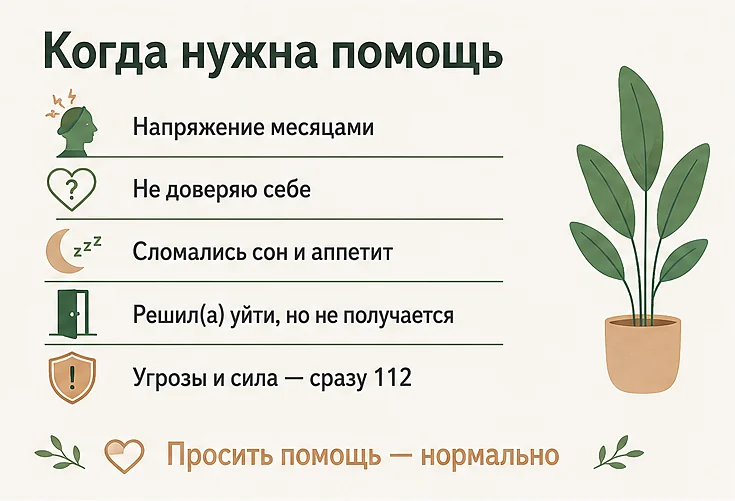
Частые вопросы
Как понять, что отношения токсичные?
Смотрите не на отдельные ссоры, а на устойчивый узор и на своё состояние. Отношения токсичны, если после общения вам систематически становится хуже, вы боитесь сказать что-то не то, часто оправдываетесь и всё чаще сомневаетесь в собственной адекватности. Ещё один надёжный маркер — ваше «нет» не выдерживает: любая граница вызывает наказание молчанием, обидой или скандалом. В здоровых отношениях конфликты тоже бывают, но после них становится яснее и спокойнее, а не тяжелее.
Чем токсичные отношения отличаются от абьюзивных?
Токсичность — это разрушительный стиль общения: обесценивание, придирки, эмоциональные качели, обиды и уколы. Абьюз — это систематическое использование власти и контроля над другим человеком: изоляция от близких, контроль денег, переписки и передвижений, угрозы, физическое или сексуальное насилие. Токсичные отношения иногда удаётся изменить, если оба видят проблему и работают над ней. Там, где есть угрозы, контроль и насилие, задача другая — безопасность, а не «наладить отношения».
Что такое газлайтинг и как его распознать?
Газлайтинг — это когда человек раз за разом заставляет вас сомневаться в своей памяти, чувствах и адекватности: «такого не было», «ты всё выдумала», «ты слишком чувствительный». Распознать его помогает проверка фактами: записывайте важные разговоры и договорённости сразу после них. Если ваши записи регулярно расходятся с тем, что вам потом рассказывают о тех же событиях, дело не в вашей памяти. Устойчивое ощущение «я схожу с ума» рядом с конкретным человеком — сам по себе сильный сигнал.
Можно ли исправить токсичные отношения?
Иногда да — если оба человека признают проблему, готовы менять поведение и изменения видны в поступках, а не только в обещаниях. Ориентир простой: вы обозначаете конкретную границу и смотрите, что происходит дальше в течение нескольких недель. Если после разговора поведение меняется хотя бы частично, шанс есть; если каждая попытка договориться заканчивается наказанием, виной или новым витком, отношения меняться не собираются. При угрозах и насилии парную терапию не рекомендуют — сначала безопасность.
Почему так трудно уйти из токсичных отношений?
Потому что плохое там чередуется с хорошим, а непредсказуемое подкрепление привязывает сильнее ровного отношения: человек держится не за то, что есть, а за периоды, когда было хорошо. Добавьте изоляцию от друзей, упавшую самооценку, годы вложенных сил, общие деньги, жильё и детей — и выход выглядит невозможным. Это не слабость и не «ей самой нравится»: так психика реагирует на качели. Чем раньше рядом появляется взгляд со стороны — друзья, родные, специалист, — тем легче принять решение.
Как выйти из токсичных отношений безопасно?
Заранее подготовьте практическую часть: документы, деньги, копии ключей, место, где можно пожить, и хотя бы одного человека, который знает о ваших планах. Если вы опасаетесь агрессии, не объявляйте о разрыве наедине и не делайте это на пике ссоры — уходите в момент, когда рядом есть поддержка, и смените пароли к почте и мессенджерам. После ухода будьте готовы к попыткам вернуть вас обещаниями и раскаянием: это часть цикла, а не доказательство перемен. При угрозах звоните 112, круглосуточно работает линия 8-800-7000-600.
Бывают ли токсичные отношения с родителями?
Да, и распознать их часто труднее, потому что такой стиль общения кажется нормой с детства. Признаки те же: постоянная критика, чувство вины как рычаг, вторжение в личные решения, сравнение с другими и обесценивание успехов. Со взрослыми родителями редко работает спор о прошлом, зато работают границы: сокращение частоты и длительности контакта, отказ обсуждать определённые темы, разговор по делу вместо оправданий. Полный разрыв — не единственный вариант, но менять формат общения придётся вам, а не им.
Сколько времени нужно, чтобы восстановиться после токсичных отношений?
Первые недели обычно самые тяжёлые: тянет вернуться, накрывает сомнение «может, я всё преувеличил», вечера кажутся пустыми. У многих становится заметно легче в течение первых двух-трёх месяцев, а на возвращение уверенности в себе уходит больше времени — особенно если отношения были долгими. Восстановление идёт не по прямой: откаты после звонков и случайных встреч — норма, а не провал. Ускоряют его контакт с людьми, режим и работа с самооценкой, а не изоляция.
А что, если токсичный человек — это я?
Сам этот вопрос — хороший признак: люди, которые систематически разрушают других, редко его себе задают. Полезнее не вешать на себя ярлык, а посмотреть на конкретные действия: повышаете ли вы голос, наказываете ли молчанием, используете ли чувство вины, чтобы добиться своего. Если да — это поведение, а не приговор, и оно меняется, особенно в терапии. Признать свою часть — не то же самое, что взять на себя ответственность за всё: в паре у каждого своя доля.
Когда нужно обращаться за помощью?
Обращайтесь, если вы месяцами живёте в напряжении, перестали понимать, где правда, потеряли сон и интерес к жизни или замечаете, что стали другим человеком рядом с этим партнёром. Помощь нужна и тогда, когда вы уже решили уйти, но не получается — это очень частая ситуация, и её нормально разбирать со специалистом. Немедленно нужна помощь, если вам угрожают, применяют силу, преследуют или удерживают: при угрозе жизни звоните 112, круглосуточно работает линия 8-800-7000-600.
Читать также
- Как пережить расставание и отпустить человека: 8 шагов — если решение уже принято и начинается самое трудное.
- Как повысить самооценку: 8 шагов, которые реально работают — восстановить то, что страдает в таких отношениях сильнее всего.
- Как справиться с одиночеством: 8 шагов, когда рядом никого нет — если после ухода тишина оказалась тяжелее, чем ожидалось.
- Как справиться с тревогой: 8 техник, которые реально помогают — если жизнь «на взводе» продолжается и после выхода.
- Стресс на работе: 8 способов справиться и не выгореть — если похожий узор сложился с руководителем или в команде.
Материал подготовлен командой AI Therapist и основан на доказательных подходах — когнитивно-поведенческой терапии (КПТ), терапии принятия и ответственности (ACT) и практиках работы с границами. Статья носит просветительский характер, не является медицинской или юридической рекомендацией и не заменяет консультацию специалиста; при угрозе безопасности обращайтесь в экстренные службы.
Источники: Всемирная организация здравоохранения — Violence against women, NHS — Getting help for domestic violence and abuse.
Кто отвечает за содержание сайта и по каким правилам мы готовим материалы — на странице о проекте.